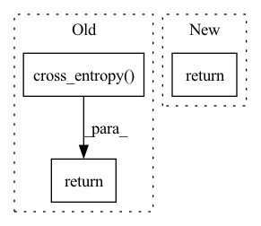

Pattern ID :1601

Before Change
x_inp, x_labels = x[:, :-1], x[:, 1:]
out = self.net(x_inp, **kwargs)
return F.cross_entropy(
out.transpose(1, 2),
x_labels,
ignore_index = self.ignore_index
)
After Change
def forward(self, x, **kwargs):
x_inp, x_labels = x[:, :-1], x[:, 1:]
return self.net(x_inp, labels = x_labels, **kwargs)
In pattern: SUPERPATTERN
Frequency: 4
Non-data size: 3
Instances
Fragment ID: 6502139
Project Name: lucidrains/triton-transformer
Commit Name: 80fcca960e94fbf3c682102518d4cac2a592ac7c
Time: 2021-09-18
Author: lucidrains@gmail.com
File Name: triton_transformer/autoregressive_wrapper.py
M Class Name: AutoregressiveWrapper
N Class Name: AutoregressiveWrapper
M Method Name: forward(2)
N Method Name: forward(2)
M Parent Class: nn.Module
N Parent Class: nn.Module
M File Name: triton_transformer/autoregressive_wrapper.py
N File Name: triton_transformer/autoregressive_wrapper.py
M Start Line: 71
M End Line: 77
N Start Line: 69
N End Line: 69
'>
Before Change
l1, l2 = l1.permute(0, 4, 1, 2, 3), l2.permute(0, 4, 1, 2, 3)
// [N, K, M, H, W], [N, M, H, W]
// sum(-logP) / ()
bppLoss = (F.cross_entropy(l1, c1, reduction="mean") + F.cross_entropy(l2, c2, reduction="mean")) / math.log(2)
return ssimLoss, contextLoss, -bppLoss
class CompressionLossQ(nn.Module):
After Change
reg = torch.distributions.kl_divergence(posterior1, prior1).mean() + torch.distributions.kl_divergence(posterior2, prior2).mean()
return ssimLoss, contextLoss, reg
class CompressionLossQ(nn.Module):
'>
Fragment ID: 6502138
Project Name: xiaosu-zhu/mcquic
Commit Name: 3bc9fe6e9c9c8b767c920dcc9da256ef2c9749ef
Time: 2021-09-12
Author: xiaosu.zhu@outlook.com
File Name: src/mcqc/losses/quantization.py
M Class Name: CompressionLossBig
N Class Name: CompressionLossBig
M Method Name: forward(8)
N Method Name: forward(8)
M Parent Class: nn.Module
N Parent Class: nn.Module
M File Name: src/mcqc/losses/quantization.py
N File Name: src/mcqc/losses/quantization.py
M Start Line: 144
M End Line: 153
N Start Line: 144
N End Line: 164
'>
Before Change
label_mask[input["label_split"]] = 1
out = out.masked_fill(label_mask == 0, 0)
output["score"] = out
output["loss"] = F.cross_entropy(output["score"], input["label"])
return output
def resnet18(model_rate=1, track=False):
After Change
out = F.adaptive_avg_pool2d(out, 1)
out = out.view(out.size(0), -1)
out = self.linear(out)
return out
def resnet18(model_rate=1, track=False):
'>
Fragment ID: 6502137
Project Name: symbioticlab/fedscale
Commit Name: 85c3e7f2e360d3da9920627f32fa83a8fe510107
Time: 2022-03-01
Author: yuxuanzh@h1.fl-alg.gaia-pg0.wisc.cloudlab.us
File Name: core/examples/fed_hetero/resnet_fedhet.py
M Class Name: ResNet
N Class Name: ResNet
M Method Name: forward(2)
N Method Name: forward(2)
M Parent Class: nn.Module
N Parent Class: nn.Module
M File Name: core/examples/fed_hetero/resnet_fedhet.py
N File Name: core/examples/fed_hetero/resnet_fedhet.py
M Start Line: 155
M End Line: 172
N Start Line: 163
N End Line: 164
'>
Before Change
l1Loss = 0.0 // F.l1_loss(restored, images)
ssimLoss = 1 - self._msssim(restored + 1, images + 1)
// [N, K, M, H, W], [N, M, H, W]
contextLoss = F.cross_entropy(predict, c1)
// [n, m, h, w, k] -> [n, k, m, h, w]
// l1, l2 = l1.permute(0, 4, 1, 2, 3), l2.permute(0, 4, 1, 2, 3)
// [N, K, M, H, W], [N, M, H, W]
// sum(-logP) / ()
// bppLoss = (F.cross_entropy(l1, c1, reduction="mean") + F.cross_entropy(l2, c2, reduction="mean")) / math.log(2)
l1 = l1.mean((2,3))
l2 = l2.mean((2,3))
posterior1 = torch.distributions.Categorical(logits=l1)
posterior2 = torch.distributions.Categorical(logits=l2)
prior1 = torch.distributions.Categorical(logits=torch.zeros_like(l1))
prior2 = torch.distributions.Categorical(logits=torch.zeros_like(l2))
reg = torch.distributions.kl_divergence(posterior1, prior1).mean() + torch.distributions.kl_divergence(posterior2, prior2).mean()
return ssimLoss, contextLoss, reg
class CompressionLossQ(nn.Module):
After Change
reg = torch.distributions.kl_divergence(posterior, prior).mean()
regs.append(reg)
return ssimLoss, contextLoss, sum(regs)
class CompressionLossQ(nn.Module):
'>
Fragment ID: 6502140
Project Name: xiaosu-zhu/mcquic
Commit Name: 290ac3b044e8dcee03a63e86c2356c47628be8a6
Time: 2021-09-16
Author: xiaosu.zhu@outlook.com
File Name: src/mcqc/losses/quantization.py
M Class Name: CompressionLossBig
N Class Name: CompressionLossBig
M Method Name: forward(4)
N Method Name: forward(8)
M Parent Class: nn.Module
N Parent Class: nn.Module
M File Name: src/mcqc/losses/quantization.py
N File Name: src/mcqc/losses/quantization.py
M Start Line: 137
M End Line: 164
N Start Line: 140
N End Line: 158